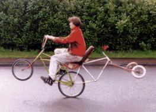

|  |
| Photos by Justin Callaway. |
This ride is all about comfort and convenience. Our bi/tri-cycle technology makes worrying about how far back that wheelie can be popped nothing but a sad memory. Moreover, it also nearly eliminates the need to steer. One need only point the helm towards one's objective, pop back, and relax.
Denk's brainchild the Co-Operator was created to promote love and interactivity within the ranks of Chunk 666. Cyclists tend to be individualists, and cyclists on fucked-up bikes tend to be fucked-up individualists. The design of the Co-Operator requires her twin pilots to simply work together or else. She's a sociable tandem tricycle with one long pair of handlebars. Each rear wheel is powered and braked by the pilot above it. Unlike what most people expect, this has no effect on the steering. In fact, often one one crank must provide all of the motivation when the frame flexes and the other chain falls off. What other human powered vehicles are there that can be repaired without stopping or having a crewmember go EVA?
While we learned after the fact that the Co-Operator bears a surprising resemblance to the Worksman Dual Trike, our version trades the Worksman ethic of bombproofness for our own need for lush excitement. Don't tell Denk, but this vehicle is an utter piece of shit. She used to be a quadracycle, but the outrigger fell off. After that, we had to correct a list to port by using a larger wheel on that side. This produces a smaller list to starboard which is counteracted by putting the heavier crewmember on the other side. There's about five and a half dead bikes in this thing, and for a long development period its mass would increase after every ride as we found a weak point (when it bent) and buttressed it with more metal. Ah, but who the hell cares? Love, that's what it's all about, and even if the Co-Operator's riders aren't skipping off to do it in the bushes, they at least know that they won't leave each other behind if there's a breakdown.
The Gynecological Station.Unfortunately, entropy will never be kind to such a large misaligned vehicle subject to the cruel torques of multiple independent drivetrains, and the Co-Operator is no exception. She has been been twisted into a mangled inert wreck several times. Each time she has been mostly straightened out, and areas that couldn't be completely rehabilitated were lopped off and replaced with others. The most recent iteration of this torturous cycle of rebirth has resulted in the The Gynecological Station, and we can only hope that this one will suffer a quick death and be reborn no more. |
Holy shit! It took Vog the Smeltor several nights without sleep to craft the Dog, the juggernaut of battle wagons. The rumble of its bare iron wheels strikes fear in the hearts of enemies and friends alike as it lumbers unstoppably forward (no brakes), crushing all who are foolish enough to stand in its path. Or at least, that was what happened for the mile or so that we were able to keep this thing moving. It turns surprisingly well for a fixed-gear trike with no differential. The rear axle is a huge pipe sleeved inside another, with grease ports to keep it from freezing up in the rain, and the chainrings and picnic tables - er, wheels - are welded directly to the axle.
The Stupid Tadpole Trike.This one was designed by someone who didn't bother to do a little experimentation before heating up the torch. Hint: on a reversed trike with a non-vertical head tube, watch how the frame leans when the handlebars are turned. It can be ridden, but only Big Bear can ride it for any distance, and that's just because Big Bear can ride anything. Basically, one of the front wheels is always off of the ground, and whichever one it is, it will be down and the other one will be up a moment later. |
|
Marsden apparently created this (somewhat) talltrike so that the epitome of Chunkstyle construction would be made flesh in its steering linkage made up of various cranks, pedals, and bolts, and its wheels of three different sizes. The ballast module in the center is a busted small engine which currently leaves an oil slick behind. |
| Copyright 2003 Megulon Five <megulon5@dclxvi.org>. |

|
This work is licensed under a Creative Commons License. | Last modified 25 June 2000. |